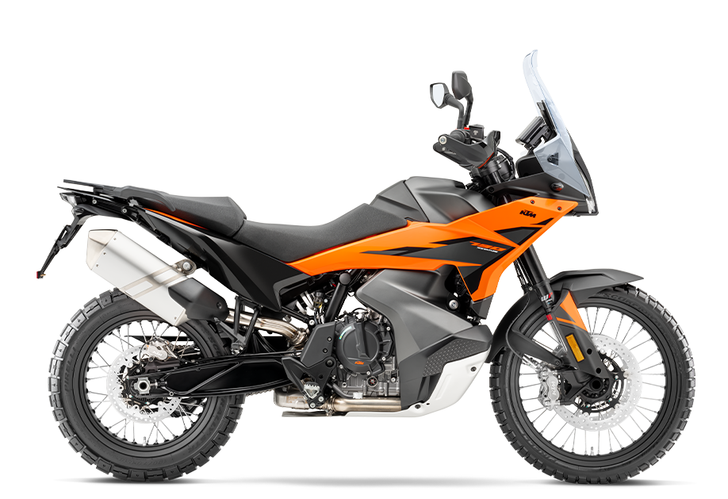
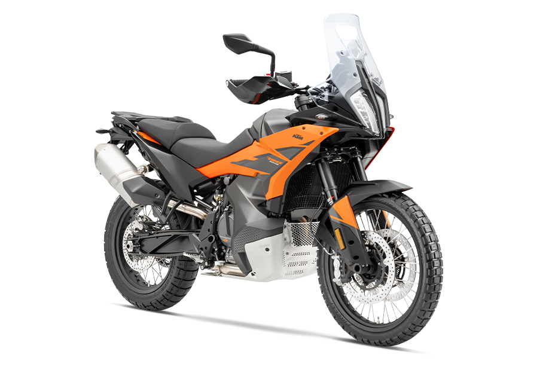
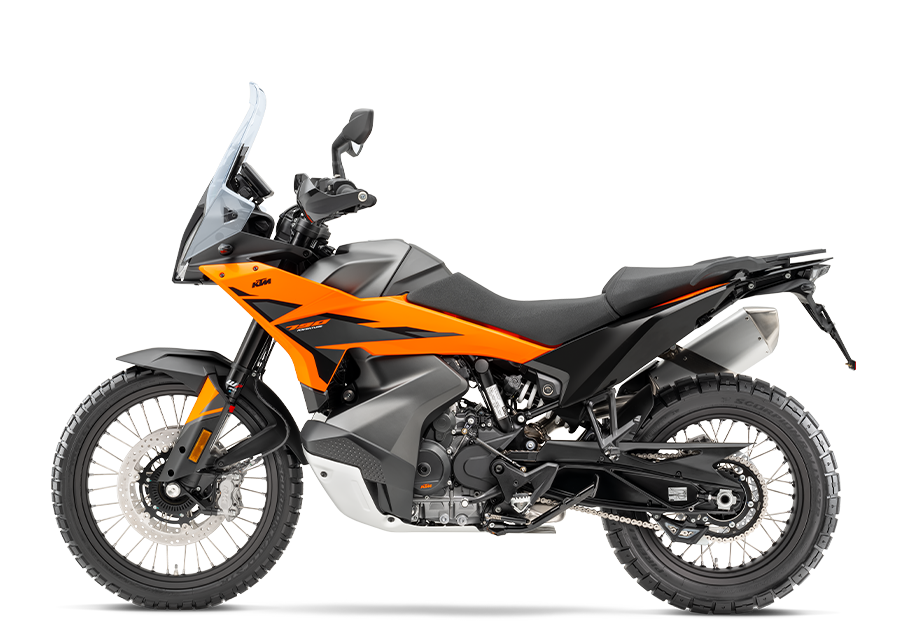

KTM 790 Adventure
- Kategorija: Adventure
- Brend: KTM
- Kvačilo: PASC™ anti-hopping clutch
- Menjač: 6-stepeni
- Težina: 203 kg
- Visina od tla: 233 mm
- Visina sedišta: 840/860 mm
- Zadnji disk: 260 mm
- Rezervoar: 20 l
O modelu: KTM 790 Adventure
KTM 790 ADVENTURE je dizajniran da učini putovanja na dva točka lakšim nego ikada. Sada, sa podesivim WP APEX prednjim vešanjem, ovaj motocikl ne ispunjava samo očekivanja o tome šta jedna avanturistička mašina treba da bude – on ih prevazilazi.
Izgrađen oko snažnog dvocilindarskog agregata sa obiljem obrtnog momenta i opremljen vrhunskim elektronskim paketom, ovo je savršen izbor za vozače koji žele da jure za horizontom i istražuju svet bez ograničenja.